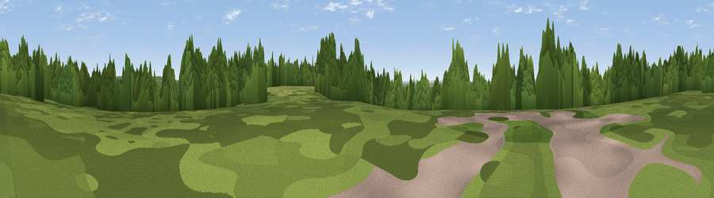

Viewpoint near South Oxhey
#32726 in England · top 25% of its area beats it · near South OxheyThe view, rendered

A 360° render of this exact spot computed from the terrain model, tree cover and land cover — summer colours, afternoon light, calibrated against photographs of famous viewpoints. Real trees, hedges and buildings will differ in detail.
The panorama
Grey silhouette: terrain skyline in each direction (720 bearings, Earth curvature and refraction included). Dashed green: skyline with trees (+15 m) and buildings (+8 m) as obstacles. Blue strip: how far the ground is visible on each bearing.
Where the view opens
Wedge length = distance to the farthest visible ground on that bearing (vegetation-aware). Rings at 10, 25 and 50 km.
What fills the view
51% woodland · 25% grassland · 20% built-up · 4% cropland
Angular shares of the visible panorama (visual magnitude), not map area. Landscape diversity 0.50 (0–1 Shannon).
Key numbers
More beautiful places nearby
The staircase of upgrades: each row has a higher view potential than everything closer. Driving times are estimates from straight-line distance, calibrated against real road routing — check an actual route before setting out.
| Place | Direction | Drive | Score |
|---|---|---|---|
| Viewpoint near Harrow | E · 6 km | ~12 min | 44.6 |
| Harrow on the Hill | SE · 7 km | ~14 min | 60.7 |
| Viewpoint near Tring Station | NNW · 27 km | ~43 min | 68.5 |
| Viewpoint near Halton | NW · 28 km | ~45 min | 74.3 |
| Coombe Hill Monument | WNW · 30 km | ~46 min | 75.5 |
| Beacon Hill | WSW · 73 km | ~97 min | 76.7 |
| Barlavington Down | SSW · 78 km | ~102 min | 77.3 |
| Viewpoint near Cocking | SSW · 78 km | ~102 min | 77.6 |
51.61576, -0.40506 · source: screening · position refined by local search. Computed location — check access rights before visiting.